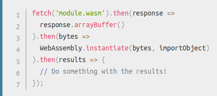
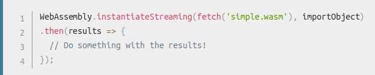

rust + wasm
MozMeetup Lima 06-2019
mozillaperuwho I am?

a global community of people who believe that openness, innovation, and opportunity are key to the continued health of the Internet.
rust + wasm

wasm
binary format for a virtual machine that can run on web
but not only the web
why

would replace js?
wasm <3 js
how it works

compiling to wasm
rustc src/main.rs --target=wasm32-unknown-unknown
using in js
 wasm-bindigen
wasm-pack